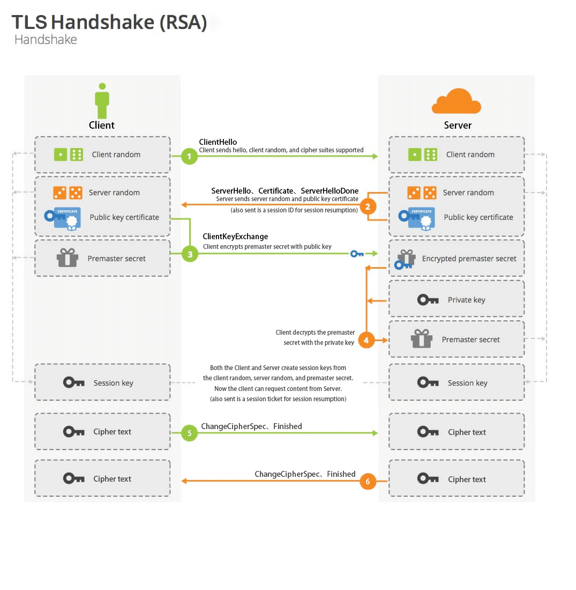

浅谈 HTTPS 的原理详解
概念
HTTP协议（HyperText Transfer Protocol，超文本传输协议）：是客户端浏览器或其他程序与Web服务器之间的应用层通信协议 。HTTPS协议（HyperText Transfer Protocol over Secure Socket Layer）：可以理解为HTTP+SSL/TLS， 即HTTP下加入SSL层，HTTPS的安全基础是SSL，因此加密的详细内容就需要SSL，用于安全的HTTP数据传输。SSL（Secure Socket Layer，安全套接字层）：1994年为Netscape所研发，SSL协议位于TCP/IP协议与各种应用层协议之间，为数据通讯提供安全支持。TLS（Transport Layer Security，传输层安全）：其前身是SSL，它最初的几个版本（SSL 1.0、SSL 2.0、SSL 3.0）由网景公司开发，1999年从3.1开始被IETF标准化并改名，发展至今已经有TLS 1.0、TLS 1.1、TLS 1.2三个版本。SSL3.0和TLS1.0由于存在安全漏洞，已经很少被使用到。TLS 1.3改动会比较大，目前还在草案阶段，目前使用最广泛的是TLS 1.1、TLS 1.2。
区别
HTTP默认工作在TCP协议80端口，用户访问网站http://打头的都是标准HTTP服务。HTTP协议以明文方式发送内容，不提供任何方式的数据加密，如果攻击者截取了Web浏览器和网站服务器之间的传输报文，就可以直接读懂其中的信息，因此，HTTP协议不适合传输一些敏感信息，比如：信用卡号、密码等支付信息。HTTPS默认工作在TCP协议443端口。HTTPS（HTTP+SSL/TLS）数据传输过程是加密的，安全性较好。
HTTPS 和 HTTP 协议相比提供了
- 数据完整性：内容传输经过完整性校验
- 数据隐私性：内容经过对称加密，每个连接生成一个唯一的加密密钥
- 身份认证：第三方无法伪造服务端（客户端）身份
TLS 握手流程
HTTPS 在传输数据之前需要客户端与服务端之间进行一次握手，在握手过程中将确立双方加密传输数据的密码信息。TLS/SSL 协议是一套加密传输的协议，使用了非对称加密，对称加密以及 HASH 算法。以 RSA 为例，TLS 握手流程如下：

上图中的 CA 证书验证，这一步是可选的，对于安全性要求高的场景会用到，比如，预防中间人攻击。
第一步 Client Hello
客户端向服务端发送 Client Hello 消息，这个消息里包含了一个客户端生成的随机数 Random1、客户端支持的协议版本，会话 ID，密码套件，压缩算法等信息。
第二步 Server Hello
服务端向客户端发送 Server Hello 消息，这个消息会从 Client Hello 传过来的加密套件里确定一份加密套件，这个套件决定了后续加密和生成摘要时具体使用哪些算法，另外还会生成一份随机数 Random2。注意，至此客户端和服务端都拥有了两个随机数 Random1+Random2 ，这两个随机数会在后续生成对称秘钥时用到。
Client 发送一个 ClientHello 消息，Server 必须回应一个 ServerHello 消息或产生一个验证的错误并且使连接失败
Certificate
在 Server Hello 消息之后，服务端将自己的证书下发给客户端，Server 会在 Certificate 消息中发送它自己的证书，如果它即将被认证，让客户端验证自己的身份，客户端验证通过后取出证书中的公钥。
Server Key Exchange
此外，如果需要的话，一个 ServerKeyExchange 消息会被发送，(例如, 如果 Server 没有证书, 或者它的证书只用于签名，RSA 密码套件就不会出现 ServerKeyExchange 消息，如果 Server 被认证过了，如果对于已选择的密码套件来说是合适的话，它可能会要求 Client 发送证书)。如果是 DH 算法，这里发送服务器使用的 DH 参数，RSA 算法不需要这一步；
Certificate Request
如果 Server 发送了一个 CertificateRequest 消息，Client 必须发送 Certificate 消息。
Server Hello Done
Server Hello Done 通知客户端 Server Hello 过程结束。
第三步
客户端收到了服务器发来的数据包后，会做这么几件事情：
Client Certificate
这是 Client 在收到一个 ServerHelloDone 消息后发送的第一个消息。这个消息只能在 Server 请求一个证书时发送。如果没有合适的证书，Client 必须发送一个不带证书的证书消息。如果 Client 不发送任何证书，Server 可以自行决定是否可以在不验证 Client 的情况下继续握手，或者回复一个致命 handshake_failure 警报 alert 信息。而且, 如果证书链某些方面不能接受(例如, 它没有被一个知名的可信 CA 签名)，Server 可以自行决定是否继续握手(考虑到 Client 无认证)或发送一个致命的警报 alert 信息。
Client Key Exchange
这个消息始终由 Client 发送。如果有 Client Certificate 消息的话，Client Key Exchange 紧跟在 Client Certificate 消息之后发送。如果不存在 Client Certificate 消息的话，它必须是在 Client 收到 ServerHelloDone 后发送的第一个消息。客户端根据服务器传来的公钥生成了 PreMaster Key，Client Key Exchange 就是将这个 key 传给服务端。
Change Cipher Spec Client
将刚才的消息使用刚才的 PreMaster Key 进行加密，生成相应的消息校验值，与刚才的消息一同发还给服务器。
第四步
服务器接受到客户端发来的消息后，会做这么几件事情：
Encrypted Handshake Message Client
这一步对应的是 Client Finish 消息，使用私钥解密上面第2步中公钥加密的消息，得到客户端产生的随机序列号。使用该随机序列号，对该消息进行加密，验证的到的校验值是否与客户端发来的一致。如果一致则说明消息未被篡改，可以信任。
Change Cipher Spec Server
使用该随机序列号，加上之前第2步中选择的加密算法，加密一段握手消息，发还给客户端。
第五步
客户端收到服务器端的消息后，接着做这么几件事情：
Encrypted Handshake Message Server
这一步对应的是 Server Finish 消息，服务端也会将握手过程的消息生成摘要再用秘钥加密，这是服务端发出的第一条加密消息。客户端接收后会用秘钥解密，能解出来说明协商的秘钥是一致的。
第六步 Application Data
握手结束后，客户端和服务器端使用握手阶段产生的随机数以及挑选出来的算法进行对称加解密的传输。
注意
采用 HTTPS 协议的服务器必须要有自己制作或者 CA 证书，区别就是自己颁发的证书需要客户端验证通过，才可以继续访问，而使用 CA 证书则不会弹出提示页面。这套证书其实就是一对公钥和私钥。公钥给别人加密使用，私钥给自己解密使用。
客户端收到服务器的回复后，首先客户端会从内置的证书列表中索引，查找服务器下发 CA 证书，如果没有找到，此时就会提示用户该证书是不可信任的。如果查到了对应 CA 证书，则取出 public key 公钥。然后，用 public key 公钥解密得到证书的内容和证书签名，内容包括证书的颁发机构，过期时间等。客户端会先验证证书签名的合法性，签名通过后，会检查证书有效期，证书过期了也会提示用户。这些都通过认证时，客户端就可以安全使用 public key 公钥了。